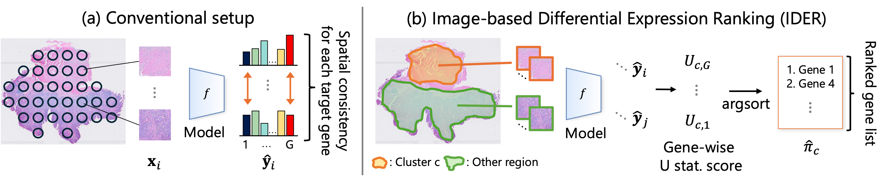

Preserving DEG Rankings for Gene Discovery in Histology-Based Spatial Gene Expression Prediction
Towards spatial gene expression prediction that prioritizes biologically meaningful gene discovery.
Overview

assets/images/ider_concept.pngIDER directly targets preservation of differential gene expression rankings, rather than only reconstructing spatial expression profiles.
Abstract
Predicting spatial gene expression from histology images could scale spatial transcriptomics (ST) to image-only cohorts, but conventional histology-based ST prediction is trained and evaluated mainly by per-gene spatial-profile reconstruction. This objective is misaligned with a key downstream use of ST: differentially expressed gene (DEG) discovery, where genes are ranked for a biological or morphology-defined contrast by evidence of between-group expression differences. We formulate image-based differential expression ranking (IDER), which asks whether predicted expression profiles preserve the contrast-specific ranked gene list obtained from measured profiles. IDER compares gene rankings induced by differential-expression statistics, rather than raw expression magnitudes or per-gene spatial correlations. We further introduce a differentiable IDER objective that aligns these statistics across genes and can be trained with morphology-derived proxy contrasts without predefined biological group labels. Experiments on public ST datasets show improved DEG-ranking agreement and pathway-enrichment overlap over conventional reconstruction objectives, including morphology-derived and pathologist-annotated tissue-region evaluations.
Interactive DEG Metrics
Explore IDER's evaluation metrics without installing Python, downloading HER2ST, or using a GPU. All computations run locally in your browser.
Example: 90 spots, 30 genes, 3 clusters; each cluster has 5 marker genes with higher measured expression. Predicted expression is measured expression plus adjustable Gaussian noise. Values are synthetic.
Paste expression matrices as comma-separated values: one spot per row, one gene per column. Both matrices must have the same shape; cluster IDs must match the number of rows. No headers or file upload required.
Evaluation results
Synthetic example · 90 spots · 30 genes · 3 clusters
Explore gene rankings
Higher U-scores indicate higher expression inside the selected cluster relative to the remaining spots.
Measured: top genes
Predicted: top genes
Mann–Whitney U uses average ranks for ties. Binary nDCG@k treats the measured top-k genes as relevant; ties among predicted scores are averaged. Spearman compares all genes' U-scores. A U-score is not a p-value.
Use the complete notebook or import the metric functions directly into your research code.
Citation
@inproceedings{
shiku2026preserving,
title={Preserving {DEG} Rankings for Gene Discovery in Histology-Based Spatial Gene Expression Prediction},
author={Kaito Shiku and Kazuya Nishimura and Yasuhiro Kojima and Ryoma Bise},
booktitle={The Fortieth Annual Conference on Neural Information Processing Systems},
year={2026},
url={https://arxiv.org/abs/2609.33928}
}